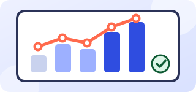
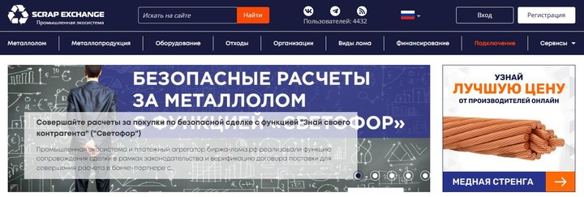
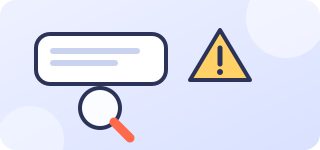
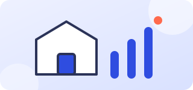

ИИ-помощники, которые берут рутину на себя
Ассистенты отвечают клиентам, ищут ответы в ваших документах и заполняют CRM. Сначала запускаем пилот на одном процессе и только потом расширяем.
- Критерии успеха согласуем до старта
- Важные действия подтверждает человек
- Данные под вашим контролем
Услуги
Двенадцать направлений: от общения с клиентами и работы с документами до HR, продаж и звонков. Выберите своё или опишите задачу.

ИИ-ассистент для заявок
Принимает обращения, задаёт уточняющие вопросы и заносит карточку в вашу CRM.
Подробнее →
Ассистент по базе знаний
Отвечает сотрудникам и клиентам по вашим документам, регламентам и инструкциям.
Подробнее →
Разбор документов
Распознаёт счета, акты и договоры и передаёт данные в учётные системы.
Подробнее →
Чат-боты для сайта и мессенджеров
Один бот отвечает клиентам на сайте, в Telegram, WhatsApp и других каналах.
Подробнее →
Аналитический ассистент
Собирает отчёты из CRM и таблиц и отвечает на вопросы по цифрам простым языком.
Подробнее →Инструменты для контента
Помогают готовить статьи, описания товаров и коммерческие предложения.
Подробнее →HR-ассистент
Помогает с откликами, вопросами кандидатов и адаптацией новых сотрудников.
Подробнее →Внутренний helpdesk
Отвечает сотрудникам на вопросы по IT, бухгалтерии и юридическим темам.
Подробнее →
Проверка договоров
Выделяет рискованные и нестандартные условия, чтобы юрист быстрее принял решение.
Подробнее →Работа с отзывами
Готовит черновики ответов на отзывы и собирает сводки по замечаниям покупателей.
Подробнее →
Голосовой помощник
Принимает входящие звонки по сценарию и передаёт сложные случаи сотруднику.
Подробнее →Ассистент для продаж
Готовит коммерческие предложения и напоминает менеджерам о следующем шаге по сделке.
Подробнее →Кейсы
Все кейсы →Проекты, в которых ИИ берёт на себя рутину, а решения остаются за человеком. Показатели фиксируем до старта и публикуем после замера.

Промышленный маркетплейсБезопасная сделка для «Биржи лома»
ИИ проверяет лоты и документы и ведёт сделку по этапам, а спорные случаи передаёт человеку.
Читать кейс → Производство меди
Производство медиАссистент по каталогу и запросам прайса для «Медника»
Ассистент уточняет параметры запроса и передаёт менеджеру готовую карточку заявки.
Читать кейс → Недвижимость и ипотека
Недвижимость и ипотекаПроверка карточек объектов для «Ипотеки на жильё»
Помощник проверяет карточку до публикации и отмечает спорные случаи для модератора.
Читать кейс →Для разных отраслей
Подбираем решения под задачи вашей сферы.

Розница и интернет-торговля
Покупатели ждут быстрых ответов, а каталог большой и меняется каждый день.

Консалтинг и услуги
Эксперты тратят время на подготовку предложений и отчётов вместо работы с клиентами.

Производство
Много документов, заявок от цехов и поставщиков, а данные лежат в разных системах.
Все отрасли → · Проверить готовность процесса → · Читать лабораторию →
Кому это нужно
Решения подходят компаниям, у которых есть повторяющаяся работа с обращениями, документами или данными.
Отделам продаж и поддержки
Если обращения теряются вечером и в выходные, а менеджеры тратят время на однотипные ответы.
Бухгалтерии и финансам
Если данные из документов вводят вручную, а сверки занимают много времени.
Руководителям
Если отчёты собирают вручную и цифры приходят с задержкой.
Как строится работа
Начинаем с малого и расширяем, только когда видим результат на реальных данных.
Знакомство
Разбираем процесс и решаем, нужен ли здесь ИИ.
Пилот
Запускаем на небольшом потоке и сравниваем с ручной работой.
Внедрение
Подключаем системы, обучаем сотрудников.
Сопровождение
Следим за качеством и дорабатываем сценарии.
Что ИИ умеет уже сегодня — и где без человека не обойтись
Разбираем типовые рабочие задачи: что нейросеть делает уверенно, где ошибается и как мы проверяем результат перед запуском. Без обещаний «заменить всех» — только честная картина.
Сможет ли ИИ превращать входящее письмо в карточку клиента?
Читает письмо или сообщение, выделяет имя, компанию, контакты, суть запроса и срок.
Умеет ли ИИ читать счета и акты и переносить данные в учёт?
Достаёт номер, дату, сумму, реквизиты контрагента и передаёт в таблицу.
Может ли ИИ отвечать сотрудникам по вашим регламентам?
Ищет ответ в документах и показывает, из какого раздела он взят.
Сможет ли бот на сайте отвечать о ценах, условиях и сроках?
Отвечает по вашему прайсу и описаниям, предлагает оставить заявку.
Умеет ли ИИ объяснять цифры из отчёта простым языком?
Берёт данные из таблицы или CRM и коротко рассказывает, что изменилось и почему.
Сможет ли ИИ подсказывать покупателям товар по описанию задачи в интернет-магазине?
Покупатель пишет, что ему нужно, а ассистент подбирает варианты из каталога и объясняет различия.
Как меняется процесс
Пример на задаче «входящая заявка». Ваши показатели мы измерим на пилоте.
- Заявка ждёт менеджера
- Данные вносят вручную
- Вечерние обращения теряются
- Ассистент отвечает сразу и уточняет задачу
- Карточка в CRM создаётся автоматически
- Менеджер получает готовое обращение
Принципы, на которых мы строим решения
- Человек подтверждает важное. Платежи, договоры и отправка клиентам идут через проверку.
- Данные под контролем. Обсуждаем, где они хранятся и кто к ним имеет доступ, до начала работ.
- Понятные критерии успеха. Договариваемся заранее, как мерить результат пилота.
- Журнал действий. Видно, что сделал ассистент и на каком основании.
Почему с нами удобно
Начинаем с малого
Пилот на одной задаче показывает, стоит ли идти дальше.
Человек в контуре
Важные действия подтверждает сотрудник.
Прозрачная работа
Журнал действий и понятные критерии успеха.
Из блога
Все статьи → Статья
СтатьяКак понять, что процесс стоит автоматизировать
Пять признаков процесса, с которого разумно начинать.
СтатьяКак поставить задачу ИИ-ассистенту, чтобы получить нужный результат
Чёткая постановка экономит больше времени, чем любая настройка.

СтатьяПочему ИИ ошибается и как построить работу с учётом этого
Ошибки неизбежны, поэтому важна не идеальность, а система контроля.
СтатьяИз чего складывается стоимость внедрения ИИ-ассистента
Разбираем, за что вы платите и на чём можно сэкономить.
СтатьяКак ИИ помогает розничному магазину: от каталога до поддержки
Где ассистент экономит время продавцов и интернет-магазина.

СтатьяС чего начать с ИИ малому бизнесу
Простые шаги без больших бюджетов и больших команд.
Готовы внедрить ИИ и получить результат?
Оставьте заявку, и мы свяжемся с вами в рабочее время, чтобы договориться о разборе вашей задачи.
- Бесплатная встреча на 30 минут
- Онлайн или в офисе в Москве
- Оценка эффекта и сроков пилота
- Подбор сценариев под вашу задачу
- Как процесс работает сейчас и кто в нём участвует
- Что занимает больше всего времени или создаёт ошибки
- Какие системы задействованы: CRM, 1С, мессенджеры, таблицы
Внедрение искусственного интеллекта для бизнеса
«Разработка - ИИ» помогает компаниям внедрять искусственный интеллект в рабочие процессы: от разбора задачи до работающего решения и сопровождения после запуска. Мы делаем ассистентов для заявок, чат-ботов для сайта и мессенджеров, ассистентов по базе знаний, системы разбора документов и подключаем их к CRM, почте и учётным системам. Подробнее обо всех направлениях — на странице «Услуги».
Зачем бизнесу искусственный интеллект
ИИ берёт на себя повторяющуюся работу: отвечает на типовые обращения, переносит данные из документов, готовит черновики писем и отчётов, находит ответы в регламентах. Сотрудники тратят меньше времени на рутину, клиенты быстрее получают ответ, а руководитель видит, как идёт процесс. Важные решения при этом остаются за человеком.
Для каких компаний подходят решения
Мы работаем с розницей и интернет-торговлей, сферой услуг, производством, логистикой, недвижимостью, медициной, финансами, образованием, строительством, автобизнесом, туризмом, страхованием и закупками. Больше всего пользы там, где много заявок, документов и вопросов к базе знаний. Весь список — на странице «Отрасли».
Как проходит внедрение
Начинаем с разбора задачи и критериев успеха, затем запускаем пилот на одном процессе и проверяем его на реальных обращениях. После этого подключаем интеграции, обучаем команду и развиваем решение. Порядок работы с данными, права доступа и журнал действий согласуем до запуска. Подробнее — в разделах «Как работаем» и «Безопасность».